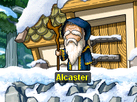
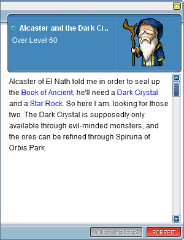
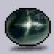

尋找上古魔書
| 任務NPC |  |
| 等級限制 | 55等 ( 亞凱斯特與黑暗水晶 60等 ) |
| 任務需求 | 星光精靈碎片100個、 月光精靈碎片50個、 日光精靈碎片30個、 野狼尾巴80個、 白狼尾巴80個、 力量水晶2個、 智慧水晶2個、 敏捷水晶2個、 幸運水晶2個、 狼人指甲3個 |
| 任務流程 | |
| 備註 |
完成尋找上古魔書任務後，60等會有
任務。 需要完成亞凱斯特與黑暗水晶的任務後，才可以向Alcaster購買 聖水($300)、 萬能療傷藥($400)、 魔法石($5000)、 召喚石($5000) |
任務流程
| 編號 |
任務狀態
|
相關NPC
|
流程
|
|---|---|---|---|
{{ index + 1 }} |
|
|
|
亞凱斯特與黑暗水晶
| 任務資訊 | 等級限制 | 任務需求 | 備註 |
|---|---|---|---|
|  | 60等 | 黑暗水晶、 星石 |
藥水店右上方的 Vogen 可製作 黑暗水晶與星石
星石的材料為九種寶石各一個 |